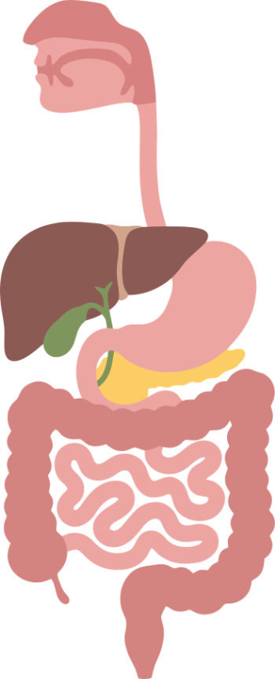
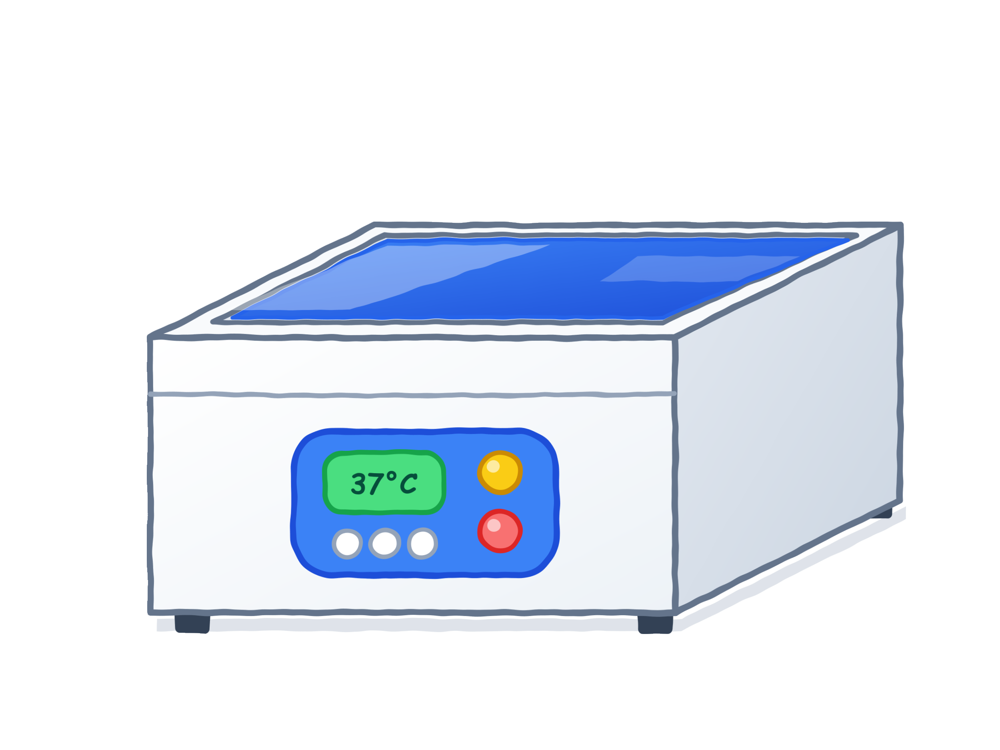
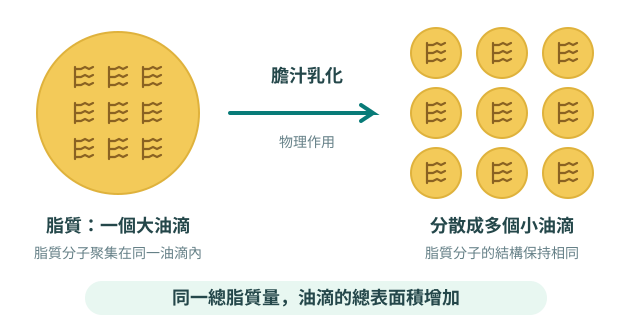
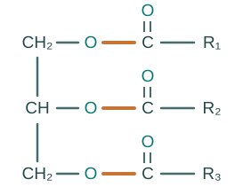
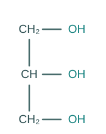
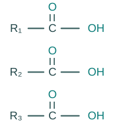

研究情境 準備探究
人體消化系統

加入消化液 X 和／或消化液 Y 後會怎樣？
IBL 虛擬實驗室 · 15–20 分鐘
化身消化系統研究員，從觀察、假設、實驗到推論，親自找出兩種未知消化液的功能吧！
請閱讀並了解以下研究任務。

我們日常飲食所攝取的脂質，分子結構龐大，無法直接穿過消化道壁細胞被人體吸收。
研究任務研究員從消化道收集到消化液 X 和消化液 Y。試透過此虛擬實驗平台設計公平測試，找出它們的功能吧！
只描述圖中油+水試管的可見現象（暫不猜測 X、Y 的身分或實驗結果）。
完成假設、公平測試及實驗裝置設計，然後開始實驗。
01 · 假說建立器
若在油和水中加入 ，試管中溶液的外觀將會 。
02 · 公平測試設計
03 · 實驗前提
請選出所有適用的假設，可選多於一項。
04 · 探究的對照組
（提示：對照組主要功能是作為比較的基準，用來確認實驗中的改變是由獨立變量所引起，而非其他外在因素的干擾，因此對照組不包含獨立變量的處理條件）
05 · 實驗裝置設計
試參考實驗變量，繪畫並標示你的實驗裝置。
（提示：此實驗需要多少個裝置？實驗組和對照組分別是什麼？）

可繪圖、上載相片或填寫文字設計；完成後按下方「儲存設計」，一起保存文字和圖像。
每次只改變一項因素；先建立未加熱的比較基準。
虛擬工作台
公平測試：油、水、溫度和時間已固定；本次只改變消化液組合。
即時觀察
選擇條件後按「開始實驗」，觀察脂質的變化。
根據你看到的現象，選擇外觀：
你的實驗記錄
| 測試 | 實驗裝置 | 你記錄的外觀 |
|---|---|---|
| 尚未記錄數據 | ||
運用你的實驗證據，建立對兩種消化液的解釋。
證據總覽
03 · 數據與推論
延伸探究：加熱對消化液的影響
以「加入各 1 mL 消化液 X、消化液 Y」為比較基準，每次只煮沸其中一種消化液。完成兩項測試並記錄觀察。
根據你看到的現象，選擇外觀：
| 測試 | 熱處理裝置 | 你記錄的外觀 |
|---|---|---|
| 尚未記錄延伸探究數據 | ||
學習重點


橙色鍵：水解的位置＋ 3H₂O（水）

甘油三酯 ＋ 3H₂O 甘油 ＋ 3 個脂肪酸
證據界限：本模擬以預設外觀呈現乳化與酶作用；清澈不等同直接檢出甘油或脂肪酸，也不能量化消化速度。實際實驗需其他化學檢測及重複測試。熱處理比較假定試劑煮沸後冷卻至相同反應溫度再使用。
學習反思
你的原始假說是否獲觀察結果支持？請引用具體比較，並運用學習重點修訂或完善解釋。
提交反思後才可列印／儲存 PDF。
探究實驗室 · 模組 1
輸入姓名、班別及電郵地址。輸入指定教師電郵會開啟教師儀表板。
答案保留本機備份；設定雲端後會自動同步至全班紀錄，請留意頁面同步狀態。重新整理後會返回空白登入頁；每次登入都開始新探究，舊紀錄仍會保留。